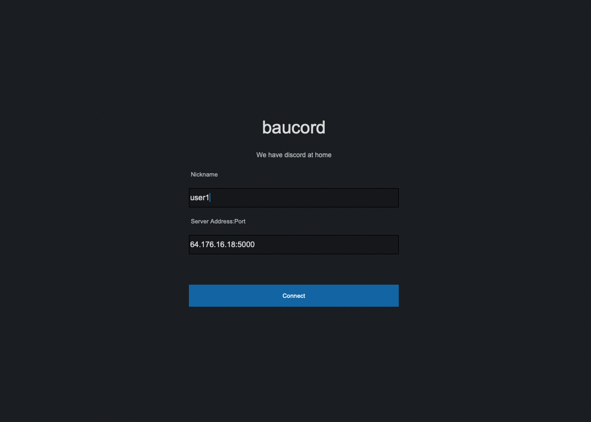
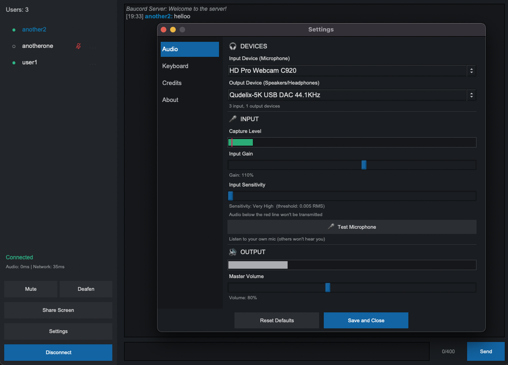

Voice, text and screen sharing you host yourself. Written in Rust, tuned for low decoding latency, and small enough to leave running without noticing. No accounts, no telemetry — just you, your friends, and a server you control.
Windows / macOS / Linux · client + server in one zip · Apache-licensed
# on whoever's hosting: $ unzip baucord-v__VERSION__-linux-x64.zip $ ./dedicated-server # everyone else: $ ./baucord # enter host:port, pick a name # we have discord at home $
Hang out with a handful of friends: talk, type, share your screen. Nothing you don't need.
Native widgets, one window. This is the whole app.


Every zip has the client and the dedicated server for that platform. Grab the one you need; anyone hosting also needs the server-side one.
Unzip, run dedicated-server somewhere your friends can
reach — a spare box, a cheap VPS, a homelab — then hand them the
address. That's the whole deployment.